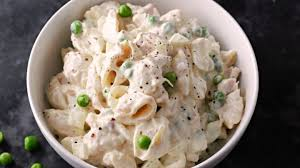

Tuna-Mac

Description
This dish fills the void in my heart. It's my go-to, ol-reliable; never ceases to fail. Breakup?
Tuna-Mac is there to drown out the feelings. Tough practice? Tuna-Mac is
present to sustain your hunger and provide the necessary nutrients to heal.
Ingredients
- 8 ounces of any preferred noodle
- 1 (6-ounce) can tuna, drained, flaked
- 3/4 cup mayonnaise, or more, as needed to moisten
- 1 teaspoon kosher salt, or to taste. No one has ever overdosed on sodium
- 1/4 teaspoon freshly ground black pepper
Procedure
- Cook macaroni to desired tenderness
- Drain noodles and let cool (to speed up the process, pour cold water over (don't let the Italians see you do this))
- Once cooled, slap the rest of those ingredients into a mixing bowl
- Stir aggressively until it looks consistent and homologous
- Voila!